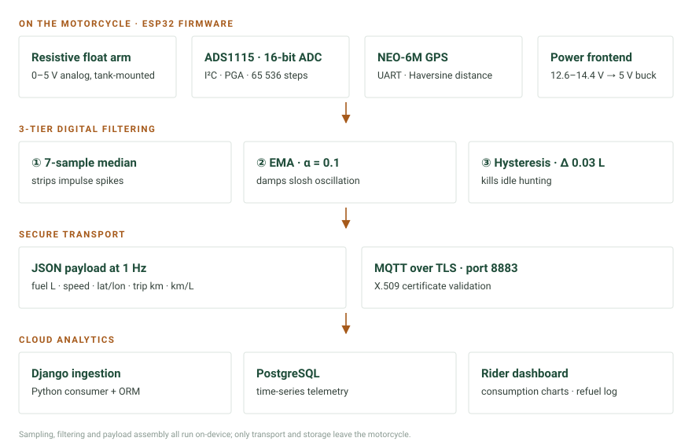

IOT & EMBEDDED ENGINEER · MOBILE DEVELOPER · CERTIFIED SYSTEM ANALYST (CSA) · BANDUNG
From field-tested panels to mobile apps and system design.
Computer Science graduate from Universitas Komputer Indonesia (UNIKOM, GPA 3.47) and Certified System Analyst (BNSP). I engineer integrated solutions: responsive ESP32 firmware and industrial control panels, secure MQTT TLS telemetry to Django/PostgreSQL, and cross-platform mobile apps with Flutter.
I am an IoT & Embedded Engineer, Mobile App Developer, and Certified System Analyst (CSA) based in Bandung, Indonesia.
I build systems where physical hardware and software meet seamlessly. I've designed industrial electrical control panels and telemetries for the Ministry of Agriculture's Smart Greenhouse, engineered production-grade mobile applications with Flutter (Dart) during my internship at PT Lattice Teknologi Mandiri, and developed high-precision vehicle telemetry on ESP32 with multi-stage digital signal filtering.
S.Kom in Informatics, Universitas Komputer Indonesia (UNIKOM) · GPA 3.47 / 4.00 · Certified System Analyst (CSA) — BNSP
Two toolkits, one engineer
Bridging hardware, cloud communications, mobile interfaces, and structured software architecture.
IoT, Embedded & Hardware
Field assembly, panel testing and embedded exposure
Control panel assembly, installation & on-site field support
Mode-switch & fail-over testing · fault reproduction and reporting
Git & GitHub · Linux / Raspberry Pi OS · Figma & Design Systems · VS Code · Postman
The journey so far
EmploymentFreelance, alongside the day job
Each role opens into the full detail — the same depth as my LinkedIn, without the scroll.
2025
Aug 2025 – Jan 2026
INTERNSHIP
CHAPTER 3 · ENTERPRISE MOBILE DEVELOPMENT
Leapfactor – PT Lattice Teknologi Mandiri
Frontend Mobile Developer (Kerja Praktek / Intern) · Bandung, Indonesia
Developed the enterprise application Arjuna Mobile using Flutter (Dart). Focused on building clean modular architecture, reactive state management, and field-ready inventory tracking.
Built robust mobile interfaces and business flows following high-standard UI/UX guidelines and responsive layout principles.
Implemented Provider state management architecture to handle authentication lifecycles, nested navigation, and item inventory mutations.
Integrated real-time barcode and QR code scanning with the mobile_scanner library for fast on-site item verification.
Connected the client application to backend servers via RESTful APIs for token-based authentication and live inventory data synchronization.
▶Full detail — engineering stack & workflow
Core Architecture & State Management
Structured modular codebase adhering to Clean Architecture principles in Flutter/Dart, separating UI presentation, domain models, and data repositories.
Managed complex global and scoped state transitions (user session tokens, cached inventories, real-time status updates) using Provider.
Hardware Integration & REST APIs
Implemented native camera hardware integration for instantaneous optical barcode and QR recognition with autofocus optimization.
Handled asynchronous network payloads, HTTP interceptors, error handling strategies, and offline-resilient data flows.
Development Process
Executed within the Waterfall software development lifecycle, conducting systematic requirement reviews, device compatibility tests across diverse Android screen densities, and rigorous bug fixes.
2023
Jan 2023 – Sep 2025
CONTRACT
CHAPTER 2 · INDUSTRIAL IOT & SMART AGRICULTURE
Smart Greenhouse Kementerian Pertanian (Team Aligness)
Support & Tester (Contract / Project-Based) · Subang & Sumedang
Field support and testing on a five-site precision agriculture deployment. Assembled and installed the control panels, ran the system through its operating modes, and reported faults back to the engineers who designed it.
Assembled and installed five ESP32-based control panels across the Subang and Sumedang greenhouse sites.
Tested manual/automatic mode switching and fail-over behaviour, reproducing faults and documenting them for the firmware and hardware engineers.
Found and reported that four of the five sites ended up running on the manual fail-safe — the field finding that shaped the project's final conclusion.
Hands-on with the panel's electrical control chain: relays, changeover switches, MCBs, and the mains/UPS power path.
▶Full detail — what the engineers built, and what I tested
What I owned
Panel assembly across all five sites, field installation support, and on-site fault reproduction.
Mode-switch testing: driving the panel through manual and automatic operation, tripping the fallback conditions, and verifying the switch happened when it should — including the cases where it did not.
Fault write-ups detailed enough for the design and firmware side to act on.
What the team built (documented, not mine)
ESP32/FreeRTOS panel firmware with a three-strike rule for mode arbitration decision-making.
Global sensor nodes on a custom fixed-offset binary protocol with OTA firmware updates.
Panel wiring schematics, motor control box, UPS sizing, and the full electrical control flow.
2024
2024 – Present
CONTRACTOR
CHAPTER 1 · PRODUCT INTERACTION & UI/UX
Projects.co.id
UI/UX Designer & Independent Contractor · Bandung, Indonesia
Designed digital interfaces and design systems for web and mobile client projects, including multipurpose tour booking and e-commerce platforms.
Crafted intuitive wireframes, user flow architectures, and interactive high-fidelity (Hi-Fi) prototypes in Figma.
Built modular Design Systems featuring scalable UI components, design tokens, typography scales, and responsive auto-layouts to accelerate front-end development.
Engineered an end-to-end IoT telemetry system replacing imprecise analog fuel gauges on carbureted motorcycles with high-precision digital metric tracking (Liters & km/L).
Multi-Stage Noise Filtering: Solved engine vibration and liquid sloshing interference using a 3-tier digital filter: 7-sample Median Filter, Exponential Moving Average (α = 0.1), and 0.03 L Hysteresis.
High-Resolution Sensing: Interfaced OEM tank float sensor via 16-bit external ADC (ADS1115) with linear interpolation calibration, alongside NEO-6M GPS calculating Haversine distance.
Secure Cloud Ingestion: Published live telemetry at 1 Hz over MQTT TLS into a Django (Python) backend and PostgreSQL time-series database.
ESP32 · C++ PlatformIO · ADS1115 · Median Filter & EMA · MQTT TLS · Django · PostgreSQLRead the capstone write-up →

Sensing, filtering and payload assembly all run on the ESP32.The same window through each filter stage — the slope is real fuel burn, the rest is noise.
Enterprise inventory tracking application built with Flutter & Dart. Features Provider state architecture, live camera barcode/QR scanner (mobile_scanner), and RESTful API synchronization.
Flutter · Dart · Provider · RESTful API · Android
Led a 6-person team as Project Manager and System Analyst. Formulated comprehensive SRS/SKPL documentation, full UML diagrams, and built a PHP/Laravel web platform aggregating public movie catalog APIs.
Open to IoT, firmware, embedded systems, mobile application (Flutter), and system analyst roles. Bandung-based, open to on-site, hybrid, or remote positions.